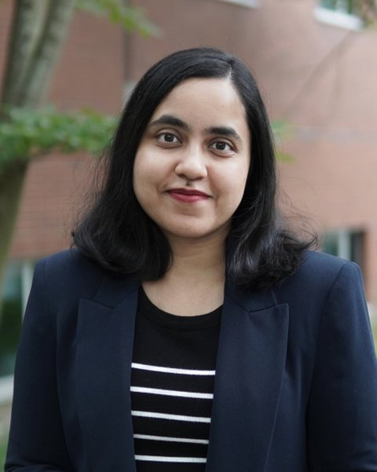

Hi! I am Rafia. I am a Ph.D. candidate in Economics at the University of Washington. I'm an applied microeconomist focused on developing economies. I study how rural households without access to formal insurance and credit protect themselves when things don't go as intended. In particular, I study whether households use religion as a strategic or spiritual tool to insure against weather shocks. I also explore how such shocks reshape labor supply, borrowing, and livestock holdings, and what these responses say about the safety nets people build around themselves. I also study the safety nets and interventions that governments and NGOs have built for them. I have extensively studied the effects of BRAC's Ultra Poor Graduation Program, and how being a program beneficiary may affect households' receipt of government social safety net benefits.
Job Market Paper
When the Rains Fail, Does Faith Pay? Weather Shocks and the Religious Margin of Adaptation
In this paper, I test a model in which visible contributions to religious institutions insure households through reputation with village lenders rather than divine protection. Reputation is effective only when lenders are able to lend. Such contributions should therefore rise after droughts, which hit poor households while sparing their richer lenders, and fall after floods, which hit the whole village. I test these predictions using a three-wave panel from rural Bangladesh. Droughts raise poor households’ contributions to mosques and temples, while time spent on early-morning religious rituals does not rise, and past donors are more likely to receive informal loans. These findings are consistent with religious giving as a way to build reputation with lenders. Contrary to the model, floods have no detectable effect on contributions.
References
Contact
Department of Economics
University of Washington
319A Savery Hall
Seattle, WA 98195
rnisat@uw.edu